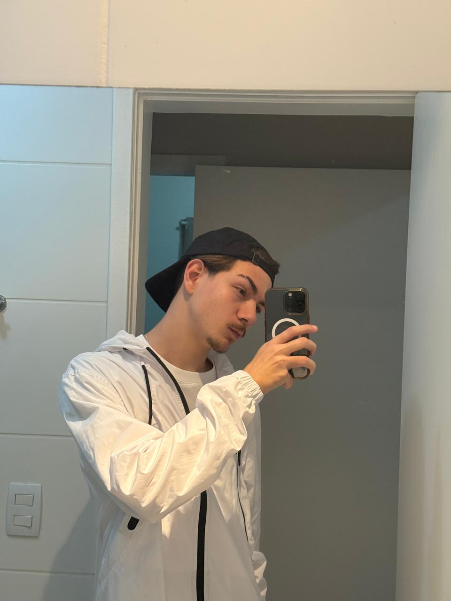

Sobre Mim:
Estou cursando Engenharia de Software na UTFPR, e minha jornada no desenvolvimento de software começa com a dedicação ao front-end. Vejo isso como o primeiro passo para, no futuro, mergulhar no mundo do back-end e, eventualmente, alcançar meu objetivo de me tornar um especialista em Inteligência Artificial. Acredito que a evolução contínua é a chave para o sucesso.
